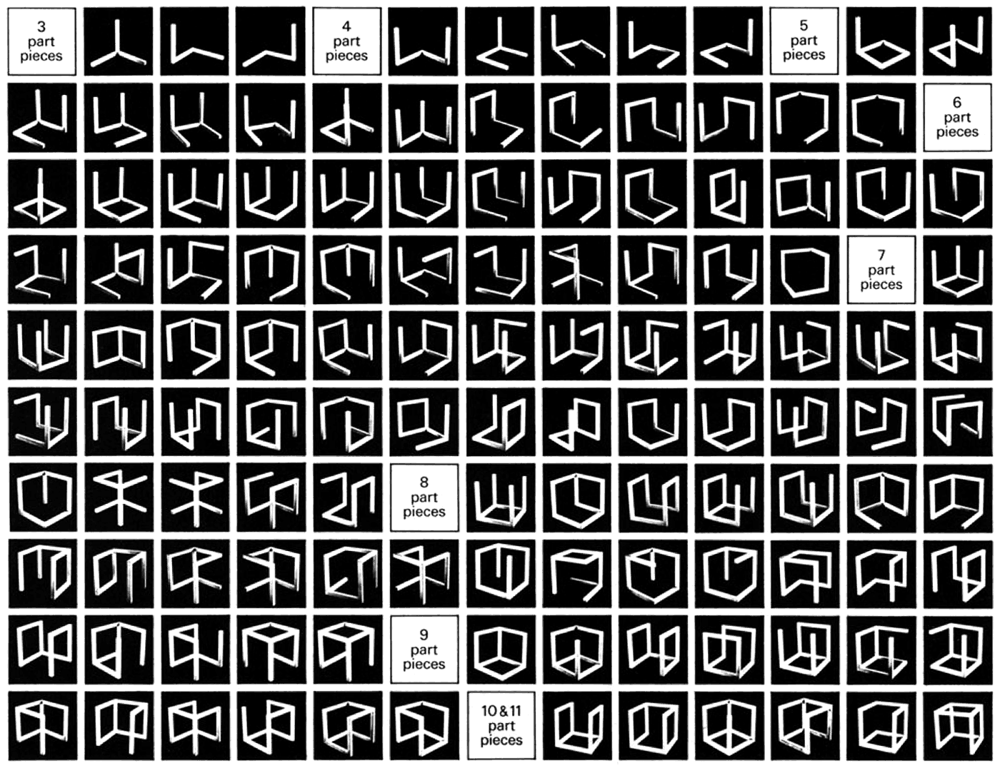
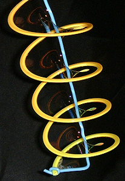
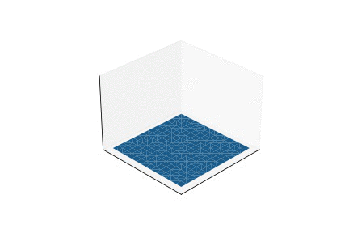
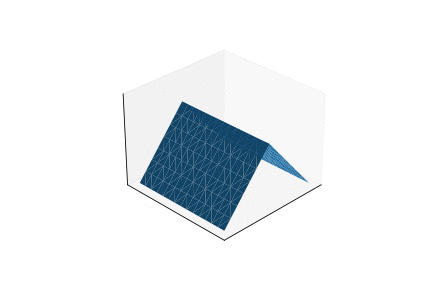
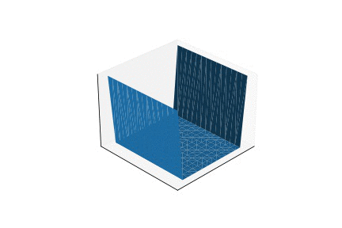
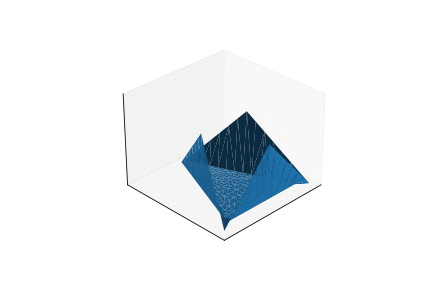

Sol LeWitt and the Soapy Pit
Rendering minimal surfaces of cubical loops
Sunday, September 13, 2020 · 3 min read
A 2014 paper by Rozhkovskaya and Reb titled “Is the List of Incomplete Open Cubes Complete?” complicates Sol LeWitt’s celebrated 1974 artwork, “Incomplete Open Cubes”. The artwork is a gallery of 122 three-dimensional structures; they are meant to be all distinct connected subsets of edges of the unit cube that result in a 3D figure — or, in LeWitt’s words, “all the ways of the cube not being complete”. The complication, noted by the paper, is that two of the structures are identical up to rotation; they should instead be mirror reflections of each other.
Have art historians realized yet? I would like to think there is some deeper philosophical significance to this bit of trivia. The exercise in exhaustive enumeration of incompleteness is itself incomplete — and, we cannot help but overlook the incompleteness, just as we cannot help but imagine the missing edges of any of the 122 almost-cubes.

Image source: Incomplete Open Cubes Revisited
I have meditated on the art-historical significance of chirality before, so today I want to talk about something else. I don’t know about you, but when I see LeWitt’s almost-cubes, I feel the need to submerge them in a tank of soapy water. Why? To see what shape the films take, of course! Is that irrational? Perhaps, but writes LeWitt, “Irrational thoughts should be followed absolutely and logically.” It turns out that my thought isn’t hard to follow — if not absolutely and logically, then at least computationally.
The shape of a soap film is a minimal surface, that is, the surface with minimal area that obeys the boundary conditions of the “loop” that the film forms within. The definition doesn’t depend at all on the properties of soap: any film-forming substance should — in the absence of other forces, such as gravity — contract to the same shape as a result of surface tension. These shapes can often be pleasing and unexpected.

Image source: Wikipedia
{kind=link}
Now, because finding the surface is a question of continuous minimization, we should be able to easily apply automatic differentiation — at least, to a discretization of the problem. Here is the algorithm: we start with a mesh grid of points and triangulate it. Then, we compute the surface area by repeated application of Heron’s Theorem to the triangles. Finally, we differentiate the total area with respect to the positions of the points, and nudge the points towards less area. The full source code for this adventure is available here. (By the way, I’m using PyTorch out of habit, but perhaps TensorFlow would be more appropriate because of its oddly LeWittian logo.)
Before I give you the results, I want you to take a moment to try and imagine what the soap films will look like. I think it’s an interesting exercise in qualitative reasoning, and, in any case, LeWitt’s work all but pleads for us to see what isn’t there.
For starters, we can reduce the entire problem from 122 cubes into just a handful of cases. Simply ask: how many distinct-up-to-symmetry “loops” are there on a cube? Let’s do casework by face count: there is 1 loop with one face (the “square”), 1 loop with two faces (the “L”), and 2 loops with three faces (the “U” and the “corner”). The rest are accounted for by complement: a four-face loop is also a two-face loop.
This yields a total of 4 cases — much more manageable! And indeed, I’ll suggest that you start with Case 1, the “square”, since the answer in that case should be obvious.
Okay, now, the results!
Case 1 is easy; we already know the answer. The soap film is just flat, because its boundary is planar.

Case 2 is less obvious — I would not have predicted this outcome! It turns out that the soap film tries to “flatten” itself into the hypotenuse. What are the implications of this? Well, one implication is that if you want to minimize the material you use to build a tent (without regard to volume), you can do better than stretching the material taught into large rectangles. Sagging actually saves material.

You might expect Case 3a to flatten similarly, but because of the up-down symmetry that can’t happen. Instead, you get a beautiful saddle shape. Actually, it turns out that all minimal surfaces are saddle-like; if they had nonzero curvature at some point then you should be able to “flatten the bulge” to reduce surface area.

And finally, Case 3b — sorry this isn’t quite perfectly modeled — tries to flatten itself around the center, kind of like a tortilla chip.
